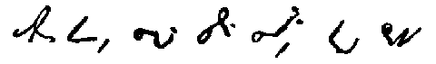
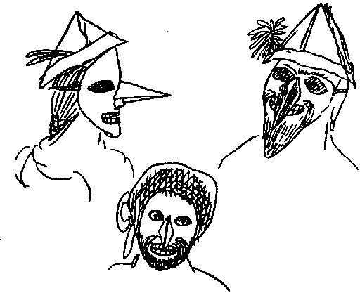

Letters of Frederick Engels
[Bremen] April 28, 1839
Dear Marie,
You too are only going to get a little from me today so that I can get on to my comedy which I want to send you. It is quite true that the gentlemen ate six crates of macaroons. You can believe it or not, just as you like, but there were about 600 people.
Serves you right that you've got nettle-rash. Your fingers are always itching because you want to do something silly. Now you've got something to itch about. You are an old itching machine, and always will be.
And I advise you not to leave any empty spaces in your letter, otherwise I'll fill them with caricatures so as not to get out of practice.
Dios, my dear Marie.

Friedrich
This scrawl is called stenography.
The Dressing-up. Comedy in I act, for Marie
Scene 1
(The living-room. Mother is sitting by the table and heroine Emil and Hedwig. Marie is sitting by the stove reading; Rudolf is running about annoying everybody.)
Mother: Marie, stop reading. That’s not a book for you. All the stuff you read, it can’t be good for you.
Marie: Oh Mother. just this one story, then you can have the book back.
Emil: Mother, what does the word Kewatroze mean?
Mother: Oh, you mean quatorze — fourteen. You learnt that a long time ago. You mustn’t always forget everything again. Hedwig! Really, the child is running up to Marie and fighting with Rudolf. Hedwig, will you do your work? You're all naughty today.
(Enter Anna and Laura Kampermann.)
Anna: There. Mother, we've done our work and now we are going upstairs to dress up. That’s what we're going to do.
Mother: All right, but don’t make too much noise.
Hedwig: Mother, I can’t get this sum right.
Mother: Oh, just think a bit. I already did it with you once. Don’t be so scatter-brained!
Hedwig (starts to cry): But I still can’t get it right.
Anna: Mother, do you want to dress up as well?
Mother: What did you say? Go away. Leave me in peace. Always Mother this and Mother that. It’s unbearable.
Anna: Tell me, Mother, do you want to?
Mother: Yes, yes. Go on, away, with you.
(Exeunt Anna and Laura with shouts of delight.)
Marie: Here is the book, Mother. I've finished the story. I want to dress up too. Tell me, what shall I put on?
Mother: Oh, I've just been telling Anna to be quiet, are you starting now?
Rudolf (falls down and shouts): Oh Mother, o — oh Mother.
Mother: What’s the matter? (Goes to him.)
Emil: Mother, what does this sentence mean?
Hedwig: Mother, here’s a very funny figure.
Mother: Will you be quiet? All of you going on at once. I can’t bear it!
Emil: Mother, tell me. Won’t you help me? Oh Mother, Mother, I must go to the A. B. C.”
Mother: Then go.
Marie: Is it true, Mother, that you want to dress up?
Mother: Nonsense. Does it still hurt, Rudolf?
Hedwig: Yes, Mother. He has a big bruise on his head. What is this figure, Mother?
Marie: But you must dress up.
(Enter Anna.)
Anna: Mother, Laura is in the A. B. C. and Emil is standing outside brawling and banging on the door.
Mother: You too? I've got no time now.
(Enter Luise.)
Luise: Madam, Wendel is going to Gemarke. Have you got anything for him?
Mother: Yes, let me think. Be quiet, all of you. Rudolf, stop whining.
Marie: Anna, didn’t Mother say she wanted to dress up too?
Anna: Yes, Mother, you did.
Mother: Will you all be quiet. Out you go.
Emil (enters crying): Oh Mother, Laura wouldn’t let me into the lavatory and so I've... I've done something in....
All: He’s done something in his trousers!
Mother. That’s all I needed. Can’t we have a moment’s peace? All of you shouting at once. (Takes a horsewhip.) There, Emil, one, two, three, Anna, Marie, out with you. Tell Wendel to come himself.
(Enter two masked figures, a man and a woman.)
Mother. What’s this? Here’s something else now.
(The man runs to Mother and takes the horsewhip gently away from her. All leap about for joy. The woman stand near Mother and places a pince-nez on her nose.)
Mother. Nonsense! But you can’t help laughing at it. (/Enter Wendel.) Wendel, here’s a letter for the post. And this for the Cleners. Here’s the money for Hühnerbein the tailor. That’s all. (Exit Wendel. Mother sits down wearing a pince-nez.) Emil, you go first and get washed.
(The masked figures seize Emil, who is standing there with his mouth open, and chase him out of the room with shouts and blows.)
Hedwig: Oh Mother, now I see I've done two more sums than I am supposed to. Hurray!
Marie: Listen, Mother. Will you dress up now too?
Mother: Oh, nonsense
Marie: But listen, Mother, I want to tell you something.
(Says something in Mother’s ear.)
Mother: No, it’s impossible.
Marie: No, it’s not. You'll see. (Exeunt all.)
(Two hours later. Hedwig is wearing Rudolf’s clothes and Rudolf is wearing Hedwig’s, and both are wearing masks which they undo for each other. The others follow one after the other, all very curiously disguised.)

Hermann: Oh August,’ I have surely got the longest nose! Look, boy, I even have a beard like the one our Fritz once had!
August: But I have such nice green cheeks and a grey beard, and my nose is also much redder!
Marie: Look, Laura, I'm a nice boy, aren’t I? You are such a tiny thing under the hat, I am much bigger than you are, and my fancy paper hat is also bigger!
(Enter Mother in an old dressing-gown with Father’s fur dressing-gown over it, and a peaked nightcap on top of her bonnet, and the pince-nez on her nose.)
All shout: Oh Mother, Mother.
Hermann: August, that’s not my mother.
Mother: Will you be quiet, boy, and sit down at the table, all of you, until he comes.
(Pause. Enter Father, looks round astonished until at last all take their masks off and the children run about shouting and screaming for joy. Finale: a gigantic feast.)
I could have gone on with it but time will not allow. The post goes in half an hour, so I'll close.
Your brother
Friedrich